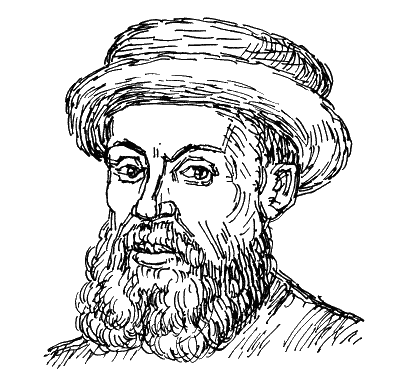

Визначні мореплавці
| Мореплавець |
Подорожі, відкриття |
Вшанування пам’яті |
Христофор Колумб
1451-1506
|
- Перша подорож 1492-1493
- Відкриті острови Куба та Гаїті
|
- На честь Колумба названо:
- Вулиця Христофора Колумба у місті Львів.
- Проспект Христофора Колумба та Площа Христофора Колумба у Нью-Йорку.
- Астероїд 327 Колумбія
|
- Друга подорож 1493-1496
- Відкриті острови Монтсеррат, Антигуа, Невіс, Пуерто-Рико, Ямайка
|
- Третя подорож 1498-1500
- Вперше досягнуто материкової частини Америки. Відкрив острів Тринідад
|
- Четверта подорож 1502-1504
- Відкрив материк на південь від Куби – берег Центральної Америки і довів, що Атлантичний океан відділяє від Південного моря нездоланний бар'єр
|
Васко да Гама
1469-1524
|
- Перша подорож 1497-1499
- Першовідкривач прямого морського торгового шляху до Азії
|
- На честь Васко да Гами названо:
- Місто Васко да Гама в Індії
- Місячний кратер Васко да Гама
- Бразильський футбольний клуб Васко да Гама
- Міст в Лiсабонi Вашку да Гама.
|
- Друга подорож 1502-1503
- Заснував форти і факторії в Мозамбіку, підкорив арабського еміра і наклав на нього данину
Третя подорож 1524-1525
|
- Третя подорож 1524-1525
- Вжив жорстких заходів проти зловживань колоніальної адміністрації та навів новий порядок у Португальській Індії
|
Фернан Магеллан
1480-1521

|
- Навколосвітня подорож 1519-1522
- Відкрито Магелланову протоку, яка сполучає Атлантичний і Тихий океани.
- Відкрито острови Гуам і Рота в архіпелазі Маріанських островів
|
- На честь Магеллана названо:
- Магелланові Хмари
- Магелланова протока
- Магеллан (космічний апарат)
- Магелланові субполярні ліси
- Магелановий пугач – вид птахів з роду пугачів.
- Астероїд 4055 Магеллан.
|
- Відкриття:
- Магеллан став першим європейцем, що проплив з Атлантичного океану в Тихий.
- Довів правильність гіпотези про кулястість Землі і неподільність океанів, що омивають сушу.
- Як виявилось, учасники експедиції «загубили день».
|